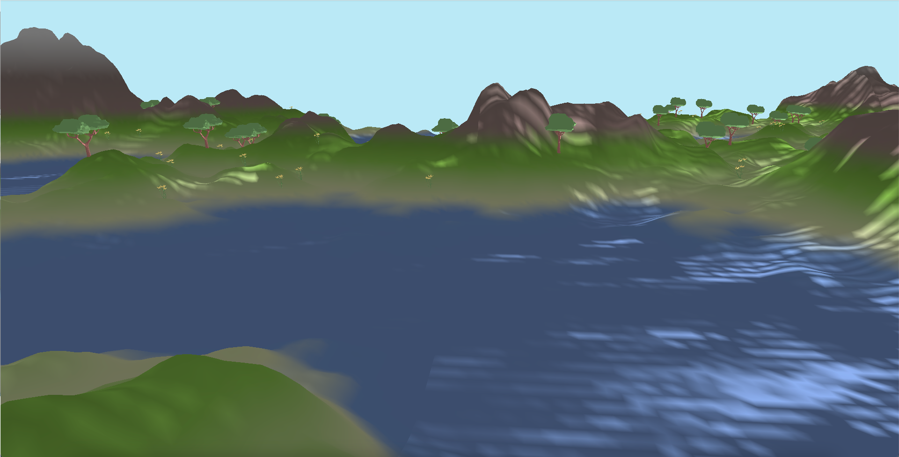

Starting from the Atlas repository, a Github repository by LiamHz, which procedurally generated terrain, our team worked together to make the visuals pop. Beginning with no OpenGL experience, over the course of a month in April, we implemented various user controls, fog effects, blending, skyboxes, grass instancing, and reflective and refractive water. We hope that you enjoy the visuals!
Before delving into the technical details of our implementation, here's some relevant context about the original author's procedural terrain implementation.
At the start, water was represented in the terrain by blue portions of the terrain mesh. The first step to enhancing the world's representation of water includes creating a water mesh separate from the large terrain mesh, allowing us to incorporate custom shaders. However, the locations of water are only known after program startup. Since a given terrain location is classified by height, we can post-process the generated terrain vertices to identify where the water should be.
After determining the general location of the water, how do we actually create the water? There are a couple options, one of which is a single plane that runs through the whole mesh (as displayed in our milestone), while a second, more efficient option would be to find a bounding box for a given “island” of water vertices. In the beginning, they will look nearly identical (the image below goes with the 1st option). To implement the latter option, we compute the min and max corners for a given breadth first traversal (as water vertices can be disconnected into “islands”). This is not only less wasteful, but solves a texturing issue covered in the next section.
There were also issues with supporting how the terrain is rendered chunk-by-chunk. Vertices are defined locally to an origin (the center of a chunk) and thus an object-to-world coordinate matrix must be calculated. We adopt the original author's design, creating an array of Vertex Array Objects (VAOs) which hold the relevant chunk's water planes, and based on the index of the VAO, we calculate the corresponding transformation.
Z-fighting between the terrain and water plane was addressed by scaling down the heights of the terrain water vertices and increasing the heights of the rest of the vertices.
With the water plane now set, we now move towards implementing the reflection and refraction effects on the water. This section and the next section of the water implementation follows this tutorial series by ThinMatrix , up to and including the Fresnel effect (varying refraction/reflection based on camera position).
The idea is that we create two additional Frame Buffer Objects (FBOs), separate from the default display. One FBO will correspond to reflections and the other will correspond to refractions — both will be used as textures. For the reflection texture, we reflect our camera along the axis of the water plane and render how the terrain and sky box appear. For our refraction texture, it will take the same rendering of the terrain as our display FBO. After rendering the transformed scene to each of these FBOs, we can use these renderings as a texture map for a water plane and achieve our desired effect.

Lastly, we make the water more convincing by adding a distortion to the texture coordinates (for reflection and refraction), based on a dUdV map. To add movement, we can modify the distortion as a function of how many renders have occurred % 1.0, to cycle the movement.
With a little bit of finishing touches (and the cube map explained below), here's what we get!

Link to our slides can be found here.
Zack worked on implementing the water. He was responsible as well for grokking the rendering scheme of the initial codebase.